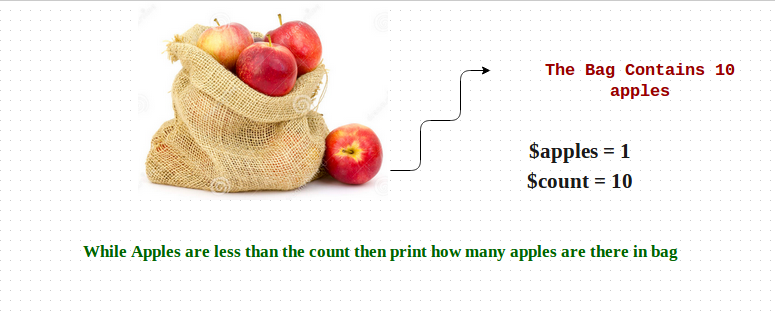
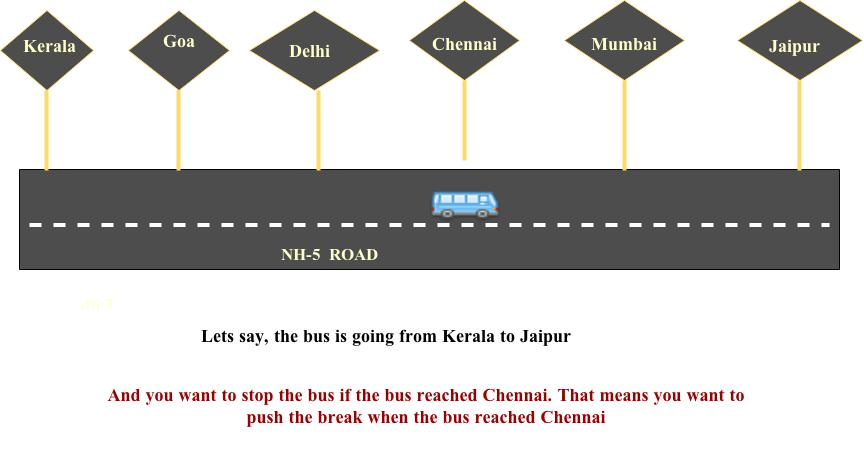

Ruby Loops
Computer programs often have to perform actions a number of times, not just once. For example, a program that prints all of your new email will need to print each email from a list, not just a single email. To do this, a constructs called loops are used. A loop will repeat the statements inside it a number of times until some condition is met.
Loops are programming constructs that help you repeat an action an arbitrary number of times.
Loops are mainly used to repeat the same piece of code any number of times.
For example you really like chocolates. Really really very much. And you want say “I love chocolates very much 5 times” with your friend. What you do is, You’ve to say
I love chocolates vey much
I love chocolates vey much
I love chocolates vey much
I love chocolates vey much
I love chocolates vey much
Since we’re focusing on ruby loops, I’ll show you does ruby loops works.
Ruby has 8 loops which does different jobs for different purposes.
Ruby For Loop:
For loop is used to loop through an array or some list and print them all. Looping over the values in an array or hash.
ruby for loop syntax:
for variable in list do
# code
end
Look into the image clearly.The bus has some passengers and we want to print all the passengers . See the below code how ruby for loop does the magic.
Example:
passengers = [“Bob”, “Mike”, “John”, “Christy”, “Emily”]
for passenger in passengers do
print “ The passenger name is #{passenger}”
end
The passenger name is Bob
The passenger name is Mike
The passenger name is John
The passenger name is Christy
The passenger name is Emily
Now lets move on exploring more ruby loops.
Ruby for each loop:
Ruby for each loop is also similar to for loop in ruby. But the only difference is ,the each loop will take a list of variables and run a block of statements for each of them.
Example:
passengers = [“Bob”, “John”, “Mike”, “Christy”, “Emily”]
passengers.each do |name|
print “The passenger name is #{name}”
end
Output:
The passenger name is Bob
The passenger name is John
The passenger name is Mike
The passenger name is Christy
The passenger name is Emily
While loops will execute all of the statements contained within them as long as the conditional statement remains true.
Ruby while loop syntax:
code while condition
OR
begin
code
end while conditional

$apples = 1
$count = 10
while $apples <= $count do
puts "I've #$apples apples in my bag"
$apples += 1
end
I've 0 apples in my bag
I've 1 apples in my bag
I've 2 apples in my bag
I've 3 apples in my bag
I've 4 apples in my bag
I've 5 apples in my bag
I've 6 apples in my bag
I've 7 apples in my bag
I've 8 apples in my bag
I've 9 apples in my bag
I've 10 apples in my bag
Until loops are almost identical to while loops except that they will loop as long as the conditional statement is false.
Ruby until loop syntax.
until conditional [do]
code
end
Example:
$tickets = 10
$count = 0
until $tickets == $count do
puts "Only #$tickets tickets left. Hurry up!"
$tickets -= 1
if $tickets < 1
puts "Sorry, All Tickets are Sold Out!"
end
end
Only 10 tickets left. Hurry up!
Only 9 tickets left. Hurry up!
Only 8 tickets left. Hurry up!
Only 7 tickets left. Hurry up!
Only 6 tickets left. Hurry up!
Only 5 tickets left. Hurry up!
Only 4 tickets left. Hurry up!
Only 3 tickets left. Hurry up!
Only 2 tickets left. Hurry up!
Only 1 tickets left. Hurry up!
Sorry, no tickets are left!!!
Ruby Times loop.
The times loop can be used on any variable containing a number or used on a number itself. Ruby times loop will print anything we want for any number of times.
Example:
We want print Tutorials Academy.com for 4 times.
4.times do
puts “tutorialsacademy.com”
end
OUTPUT:
tutorialsacademy.com
tutorialsacademy.com
tutorialsacademy.com
tutorialsacademy.com
Ruby break Statement:
Ruby break statement will break the execution of a loop when a certain condition is met. Take a look at the image below

Example1:
stops = ['kerala', 'Goa', 'Delhi', 'Chennai', 'Mumbai', 'Jaipur']
stops.each do |k|
if k == 'Chennai'
break
end
puts "The bus just reached #{k}"
end
OUTPUT:
The bus just reached kerala
The bus just reached Goa
The bus just reached Delhi
days = ['sunday', 'monday', 'tuesday', 'wednesday', 'thursday', 'friday', 'saturday']
for day in days
if day == 'thursday'
break # if the day == thursday it will stop the execution from there using break keyword in ruby
end
puts "The days is #{day}"
end
The days is sunday
The days is monday
The days is tuesday
The days is wednesday